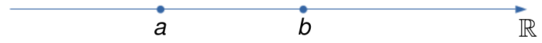
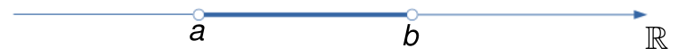
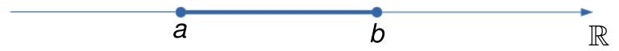
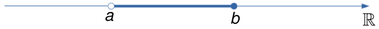
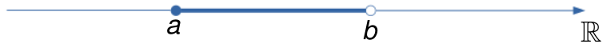
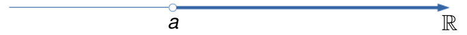
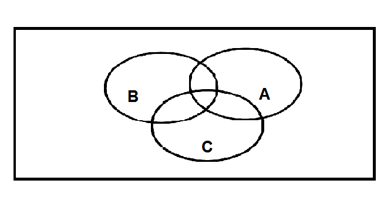
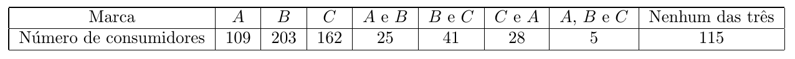

1 Conjuntos
1.1 Definição de conjunto
A notação matemática de conjunto é praticamente a mesma que se usa na linguagem comum.
Exemplos:
- conjunto das vogais;
- conjunto dos planetas do sistema solar;
- conjunto dos números ímpares positivos;
- conjunto dos números primos positivos.
Cada membro que entra na formação do conjunto é chamado de elemento. Assim, nos exemplos anteriores, os elementos são:
- a, e, i, o, u
- Mercúrio, Venus, Terra, Marte,\(\ldots\)
- \(1, 3, 5, 7, 9,\ldots\)
- \(2, 3, 5, 7, 11, 13,\ldots\)
Um conjunto é indicado geralmente por uma letra maiúscula, \(A, B, C,\ldots\) e os elementos são indicados por letras minúsculas \(a, b, c, x, y, z,\ldots\)
Na figura seguinte, temos que \(a\in A\), \(b\in A\), \(c\in A\), enquanto que \(d\not\in A\).

1.2 Descrição de um conjunto
Um conjunto pode ser descrito enumerando explicitamente os elementos do conjunto ou descrevendo uma propriedade característica de seus elementos.
Exemplos:
- Conjunto das vogais: \(\{a, e, i, o, u\}\)
- Conjunto dos números ímpares positivos: \(\{1, 3, 5, 7, 9,\ldots\}\)
- Conjunto dos inteiros positivos entre \(1\) e \(100\): \(\{1, 2, 3,\ldots,100\}\)
- \(\{x\ |\ x \mbox{ é divisor inteiro de } 3\}\) = \(\{1, -1, 3, -3\}\)
- \(\{x\ |\ x \mbox{ é inteiro e } 0\leq x\leq 50\}\) = \(\{0, 1, 2,\ldots,50\}\)
1.3 Conjunto vazio
Chama-se conjunto vazio aquele conjunto que não possui elementos. Ele é denotado por \(\emptyset\).
Exemplos:
- \(\{x\ |\ x\neq x\} = \emptyset\)
- \(\{x\ |\ x \mbox{ é impar e múltiplo de } 2\} = \emptyset\)
- \(\{x\ |\ x>0 \mbox{ e } x<0\} = \emptyset\)
1.4 Conjunto universo
Em todo problema matemático envolvendo conjuntos, admitimos a existência de um conjunto \(U\) ao qual pertencem todos os elementos utilizados no problema. Tal conjunto é chamado de conjunto universo.
Exemplos:
- \(\{x\in U\ |\ x \mbox{ é um estado da região sul do Brasil}\} = \{\)Paraná, Santa Catarina, Rio Grande do Sul\(\}\). Neste caso, \(U\) é o conjunto de todos os estados do Brasil.
- \(\{x\in U\ |\ x \mbox{ é vogal}\}= \{a, e, i, o, u\}\). Neste caso, \(U\) é o conjunto das letras do alfabeto da língua portuguesa.
- \(\{x\in U\ |\ x \mbox{ é divisor inteiro de } 3\} = \{1, -1, 3, -3\}\). Neste caso, podemos considerar \(U=\mathbb{Z}\) (conjunto dos inteiros).
Muitas vezes, a resposta a nosso problema depende do conjunto universo que estamos considerando.
Exemplo:
Qual é o conjunto dos pontos \(P\) que ficam a igual distância dos pontos \(A\) e \(B\) ?
Se consideramos o conjunto universal \(U\) como sendo a reta que contém os pontos \(A\) e \(B\), então o conjunto \(P\) dos pontos equidistantes de \(A\) e \(B\) está formado por um único ponto, como mostra a seguinte figura:

Por outra parte, se consideramos \(U\) como sendo o plano contendo os pontos \(A\) e \(B\), então o conjunto \(P\) é a reta mediatriz do segmento \(AB\), como mostra a figura embaixo:

1.5 Conjuntos iguais
Dois conjuntos \(A\) e \(B\) são iguais se todo elemento de \(A\) pertence a \(B\) e todo elemento de \(B\) pertence a \(A\).
\[A=B\ \ \Longleftrightarrow\ \ \forall x, (x\in A \Leftrightarrow x\in B)\]
Se o conjunto \(A\) é diferente do conjunto \(B\), escrevemos \(A\neq B\).
Exemplos:
- \(\{a, b, c, d\} = \{b, a, d, c\}\)
- \(\{x\ |\ 3x+2 = 8\} = \{2\}\)
- \(\{a, b, c\}\neq\{a, b, c, d\}\)
1.6 Subconjuntos
Um conjunto \(A\) é um subconjunto do conjunto \(B\) se todo elemento de \(A\) é também um elemento de \(B\).
\[A\subset B\ (\mbox{ou } B\supset A)\ \ \Longleftrightarrow\ \ \forall x, (x\in A \Rightarrow x \in B)\]

Leia-se: \(A\subset B\) (\(A\) está contido em \(B\)) e \(B\supset A\) (\(B\) contém \(A\)). Se \(A\) não está contido em \(B\) (ou \(B\) não contém \(A\)) escrevemos \(A\nsubseteq B\) (ou \(B\nsupseteq A\)).
Podemos definir a igualdade entre conjuntos através da inclusão. De fato, temos que
\[A = B \ \ \Longleftrightarrow\ \ (A\subset B \mbox{ e } B\subset A)\]
Exemplos:
- \(\{a, b, c\}\subset \{a, b, c, d\}\)
- \(\{x\ |\ x \mbox{ é inteiro e par}\}\subset \{x\ |\ x \mbox{ é inteiro}\}\)
- \(\{a, b\}\nsubseteq \{a, c, d, e\}\)
- \(\{x\ |\ x \mbox{ é inteiro e par}\}\nsubseteq \{x\ |\ x \mbox{ é inteiro e primo}\}\)
Sejam \(A, B\) e \(C\) conjuntos. Algumas propriedades da inclusão são as seguintes:
- Para todo conjunto \(A\), temos que \(\emptyset\subset A\)
- \(A\subset A\) (reflexiva)
- \((A\subset B \mbox{ e } B\subset A)\ \Longrightarrow\ A=B\) (anti-simétrica)
- \((A\subset B \mbox{ e } B\subset C)\ \Longrightarrow\ A\subset C\) (transitiva)
1.7 Conjunto das partes
Dado um conjunto \(A\), o conjunto das partes de \(A\) é o conjunto formado por todos os subconjuntos de \(A\):
\[\mathcal{P}(A) = \{B\ |\ B\subset A\}\]
Observar que \(\mathcal{P}(A)\) é um conjunto cujos elementos também são conjuntos.
Por exemplo, se \(A = \{a, b, c\}\), então \(\mathcal{P}(A) = \{\emptyset, \{a\}, \{b\}, \{c\}, \{a, b\}, \{a, c\}, \{b, c\}, A\}\).
Pode-se provar que se \(A\) contém \(n\) elementos, então \(\mathcal{P}(A)\) contém \(2^n\) elementos.
1.8 União e interseção de conjuntos
Dados dois conjuntos \(A\) e \(B\), a união de \(A\) com \(B\) é o conjunto formado pelos elementos que pertencem a \(A\) ou a \(B\):
\[A\cup B = \{x\ |\ x\in A \mbox{ ou } x\in B\}\]

Exemplos:
- \(\{a, b\}\cup \{c, d\} = \{a, b, c, d\}\)
- \(\{a, b, c\}\cup \{c, e, f\} = \{a, b, c, e, f\}\)
- \(\{a, b\}\cup \emptyset = \{a, b\}\)
- \(\emptyset \cup \emptyset = \emptyset\)
Sejam \(A, B\) e \(C\) conjuntos. Algumas propriedades da união são as seguintes:
- \(A\cup A = A\) (idempotente)
- \(A \cup \emptyset = A\) (elemento neutro)
- \(A\cup B = B\cup A\) (comutativa)
- \((A\cup B)\cup C = A\cup (B\cup C)\) (associativa)
- \(A\subset (A\cup B)\)
Dados dois conjuntos \(A\) e \(B\), a interseção de \(A\) com \(B\) é o conjunto formado pelos elementos que pertencem a \(A\) e a \(B\):
\[A\cap B = \{x\ |\ x\in A \mbox{ e } x\in B\}\]

Dois conjuntos \(A\) e \(B\) são disjuntos se eles não tem elementos em comum, ou seja, \(A\cap B = \emptyset\).

Exemplos:
- \(\{a, b, c\}\cap\{a, b, d, e\} = \{a, b\}\)
- \(\{a, b\}\cap\{a, b, c\} = \{a, b\}\)
- \(A\cap\emptyset = \emptyset\)
- \(\{a, b\}\cap\{c, d\} = \emptyset\)
Sejam \(A, B\) e \(C\) conjuntos. Algumas propriedades da interseção são as seguintes:
- \(A\cap A = A\) (idempotente)
- Se \(A\subset B\), então \(A\cap B = A\). Em particular, para todo conjunto \(A\), temos que \(A\cap U = A\) (elemento neutro)
- \(A\cap B = B\cap A\) (comutativa)
- \(A\cap (B\cap C) = (A\cap B)\cap C\) (associativa)
- \((A\cap B)\subset A\)
Outras propriedades envolvendo uniões e interseções são as seguintes:
- \(A\cup (B\cap C) = (A\cup B) \cap (A\cup C)\) (distributiva da união em relação à interseção)
- \(A\cap (B\cup C) = (A\cap B) \cup (A\cap C)\) (distributiva da interseção em relação à união)
- \(A\cup (A\cap B) = A\)
- \(A\cap (A\cup B) = A\)
1.9 Complementar de um conjunto
Dado um conjunto \(A\), o complementar de \(A\) (em relação a \(U\)) é o conjunto formado pelos elementos do conjunto universo \(U\) que não estão em \(A\):
\[A^{\mathrm{c}} = \{x\in U\ |\ x\not\in A\}\] Observe que a definição de complementar depende do conjunto universo considerado.

Exemplos:
- Se \(U = \{a, b, c, d, e, f\}\), então \(\{a, b, c\}^{\mathrm{c}} = \{d, e, f\}\)
- Se \(U = \{1, 2, 3, 4,\ldots\}\) (conjunto dos números naturais), então \(\{1,3\}^{\mathrm{c}} = \{2, 4, 5, 6,\ldots\}\)
Em particular, temos que
- \(U^\mathrm{c} = \emptyset\)
- \(\emptyset^\mathrm{c} = U\)
1.10 Diferença de conjuntos
Dados dois conjuntos \(A\) e \(B\), a diferença entre \(A\) e \(B\) é o conjunto formado pelos elementos de \(A\) que não estão em \(B\):
\[A-B = \{x\ |\ x\in A \mbox{ e } x\not\in B\}\]
Pode-se provar que \(A-B = A\cap B^\mathrm{c}\).

Exemplos:
- \(\{a,b\}-\{b,c,d\}=\{a\}\)
- \(\{a,b\}-\{c,d,e\}=\{a,b\}\)
- \(\{a,b\}-\emptyset=\{a,b\}\)
- \(\{a,b\}-\{a,b,c,d\}=\emptyset\)
A diferença simétrica entre \(A\) e \(B\) é definida como o conjunto formado pelos elementos que estão em \(A\cup B\) e que não estão em \(A\cap B\):
\[A\Delta B = (A\cup B) - (A\cap B) = (A\cup B)\cap (A\cap B)^\mathrm{c}=(A-B)\cup(B-A)\]

Exemplos:
- \(\{a,b,c\}\Delta \{c,d,e\}=\{a,b,d,e\}\)
- \(\{a,b\}\Delta\{c,d\}=\{a,b,c,d\}\)
- \(\{a,b\}\Delta\{a,b,c,d\}=\{c,d\}\)
- \(\{a,b\}\Delta\{a,b\}=\emptyset\)
Operações de conjuntos envolvendo uniões, interseções, complementares e diferênças são chamadas de operações boleanas de conjuntos.
1.11 Leis de De Morgan
Dados dois conjuntos \(A\) e \(B\), as leis de De Morgan são dadas pelas seguintes igualdades:
\[(A\cup B)^c = A^c\cap B^c\] \[(A\cap B)^c = A^c\cup B^c\] Omitiremos a prova deste resultado, mas o leitor pode se convencer disso fazendo os diagramas de Venn correspondentes.
Usando indução finita (veremos mais adiante), podemos extender as leis de De Morgan para o caso de \(n\) conjuntos (\(n>2\)).
Dados \(n\) conjuntos \(A_1, A_2,\ldots,A_n\), é comum denotar a união deles na seguinte forma:
\[\bigcup_{i=1}^{n}A_i = A_1\cup A_2\cup\ldots\cup A_n\]
A interseção dos \(n\) conjuntos pode-se escrever, de forma resumida, como
\[\bigcap_{i=1}^{n}A_i = A_1\cap A_2\cap\ldots\cap A_n\]
As leis de De Morgan podem ser enunciadas, considerando \(n\) conjuntos, como
\[\left(\bigcup_{i=1}^{n}A_i\right)^c = \bigcap_{i=1}^{n}A_i^c\] \[\left(\bigcap_{i=1}^{n}A_i\right)^c = \bigcup_{i=1}^{n}A_i^c\]
As leis de De Morgan podem ser parafraseadas como: o complementar da união é igual à interseção dos complementares e o complementar da interseção é igual à união dos complementares.
1.12 Conjuntos numéricos
1.12.1 Conjunto dos números naturais
O conjunto \(\mathbb{N}=\{1,2,3,4,5,\ldots\}\) é chamado conjunto dos números naturais e é denotado por \(\mathbb{N}\). É o conjunto que possui o \(1\) e todos os seus sucessores.
Neste conjunto são definidas duas operações fundamentais, a adição e a multiplicação. Para todo \(a,b,c\in\mathbb{N}\), essas operações apresentam as seguintes propriedades:
(A1) Associatividade da adição: \(a+(b+c)=(a+b)+c\)
(A2) Comutatividade da adição: \(a+b=b+a\)
(A3) Elemento neutro da adição: existe \(0\in\mathbb{R}\) tal que para todo \(a\in\mathbb{R}\), \(0+a=a+0=a\)
(M1) Associatividade da multiplicação: \(a\cdot(b\cdot c)=(a\cdot b)\cdot c\)
(M2) Comutatividade da multiplicação: \(a\cdot b=b\cdot a\)
(M3) Elemento neutro da multiplicação: existe \(1\neq0\) tal que para todo \(a\in\mathbb{R}\), \(1\cdot a=a\cdot 1=a\)
(D1) Distributividade: \(a\cdot(b+c)=a\cdot b + a\cdot c=b\cdot a + c\cdot a = (b+c)\cdot a\)
Observar que dado \(a\in\mathbb{N}\), não podemos definir em \(\mathbb{N}\) o simétrico \(-a\), ou seja, não podemos definir em \(\mathbb{N}\) a operação inversa da adição (a subtração). Assim, estende-se o conjunto dos naturais ao conjunto dos inteiros.
1.12.2 Conjunto dos números inteiros
O conjunto \(\mathbb{Z}=\{\ldots,-4, -3, -2, -1,0,1,2,3,4,\ldots\}\) é chamado conjunto dos números inteiros e é denotado por \(\mathbb{Z}\). Esse conjunto é a extensão dos números naturais, acrescentando os elementos negativos e o zero.
No conjunto \(\mathbb{Z}\) são definidas também as operações de adição e multiplicação que apresentam, além das propriedades (A1), (A2), (A3), (M1), (M2), (M3) e (D1), a seguinte propriedade:
(A4) simétrico ou oposto para a adição: para todo \(a\in\mathbb{Z}\), existe \(-a\in\mathbb{Z}\) tal que \(a+(-a)=(-a)+a=0\)
Para quaisquer elementos \(a,b\in\mathbb{Z}\), escrevemos \(a+(-b)=a-b\).
Um conceito importante no conjunto \(\mathbb{Z}\) é o de divisor.
Dizemos que o inteiro \(a\) é divisor do inteiro \(b\) quando existe um inteiro \(c\) tal que \(ca=b\). Em símbolos:
\[a\,|\,b\ \Longleftrightarrow\ \exists\ c\in\mathbb{Z}\ \mbox{ tal que }\ ca=b\] Exemplos:
- \(2\,|\, 6\ \) pois \(\ 3\cdot 2=6\)
- \(3\,| -18\ \) pois \(\ (-6)\cdot 3=-18\)
- \(-2\,|-14\ \) pois \(\ 7\cdot (-2)=-14\)
- \(3\,|\,0\ \) pois \(\ 0\cdot 3=0\)
- \(0\,|\,0\ \) pois \(\ 1\cdot 0=0\)
Se \(a\) é divisor de \(b\), dizemos que \(b\) é múltiplo de \(a\) ou que \(b\) é divisível por \(a\).
Exemplos:
- O conjunto dos divisores de \(2\): \(\ \{1,-1,2,-2\}\)
- O conjunto dos divisores de \(-5\): \(\ \{1,-1,5,-5\}\)
- O conjunto dos divisores de \(8\) : \(\ \{1,-1,2,-2,4,-4\}\)
- O conjunto dos divisores de \(0\): \(\ \mathbb{Z}\)
- O conjunto dos múltiplos de \(2\): \(\ \{0, \pm 2, \pm 4, \pm 6,\ldots\}=\{x\in\mathbb{Z}\ :\ x=\pm2m,\ m\in\mathbb{Z}\}\)
- O conjunto dos múltiplos de \(-5\): \(\ \{0, \pm 5, \pm 10, \pm 15,\ldots\}=\{x\in\mathbb{Z}\ :\ x=\pm 5m,\ m\in\mathbb{Z}\}\)
- O conjunto dos múltiplos de \(0\): \(\ \{0\}\)
Dizemos que um número inteiro \(p\) é primo se \(p\neq0,1,-1\) e o conjunto dos divisores de \(p\) é dado por \(\{1,-1,p,-p\}\).
Exemplo: os inteiros \(2,-2,3,-3,5,-5,7,-7,11,-11,13,-13\) são primos.
Dado \(a\in\mathbb{Z}\), denotemos o conjunto dos divisores de \(a\) por \(D(a)\) e o conjunto dos múltiplos de \(a\) por \(M(a)\). Dados dois inteiros \(a\) e \(b\), definimos o mínimo múltiplo comum (mmc) de \(a\) e \(b\) como o menor múltiplo de ambos inteiros \(a\) e \(b\). Em símbolos:
\[c=\mathrm{mmc}(a,b)\ \Longleftrightarrow\ c\in M(a)\cap M(b)\ \mbox{ e para todo }\ x\in M(a)\cap M(b),\ c\leq x\].
Também, definimos o máximo divisor comum (MDC) de \(a\) e \(b\) como o maior divisor de ambos inteiros \(a\) e \(b\). Em símbolos:
\[d=\mathrm{MDC}(a,b)\ \Longleftrightarrow\ d\in D(a)\cap D(b)\ \mbox{ e para todo }\ y\in D(a)\cap D(b),\ d\geq y\]
Dizemos que dois inteiros \(a\) e \(b\) são primos entre si se \(\mathrm{MDC}(a,b)=1\).
Dado um número inteiro \(a\), em que \(a\neq1,-1\), não é possível definir em \(\mathbb{Z}\) o seu inverso \(\displaystyle\frac{1}{a}\), ou seja, não podemos definir em \(\mathbb{Z}\) a operação inversa da multiplicação (a divisão). Assim, extendemos o conjunto dos inteiros ao conjunto dos racionais.
1.12.3 Conjunto dos números racionais
O conjunto dos números racionais é denotado por \(\mathbb{Q}\). Um elemento de \(\mathbb{Q}\) é da forma \(\displaystyle\frac{a}{b}\), em que \(a,b\in\mathbb{Z}\) e \(b\neq0\), ou seja
\[\mathbb{Q}=\{\displaystyle\frac{a}{b}\ :\ a,b\in\mathbb{Z},\ b\neq0\}\] Adotamos as seguintes definições:
\(\displaystyle\frac{a}{b}=\frac{c}{d}\ \Longleftrightarrow\ ad=bc\)
\(\displaystyle\frac{a}{b}+\frac{c}{d}=\frac{ad+bc}{bd}\)
\(\displaystyle\frac{a}{b}\cdot\frac{c}{d}=\frac{ac}{bd}\)
Observar que \(\mathbb{Z}\subset\mathbb{Q}\), pois podemos pensar todo número inteiro \(a\) como sendo \(a=\displaystyle\frac{a}{1}\).
Dado \(\displaystyle\frac{a}{b}\), chamamos \(a\) de numerador e b de denominador. Dizemos que a fração \(\displaystyle\frac{a}{b}\) é irredutível se \(MDC(a,b)=1\), ou seja, se \(a\) e \(b\) são primos entre si. Caso contrário a fração é dita redutível.
Exemplos: \(\displaystyle\frac{2}{3}, \frac{4}{5}\) e \(\displaystyle\frac{7}{9}\) são frações irredutíveis, porém \(\displaystyle\frac{4}{8}\) não é.
Toda fração redutível é igual a uma única fração irredutível. Por exemplo, as frações redutíveis \(\displaystyle\frac{4}{8}\) e \(\displaystyle\frac{12}{24}\) são iguais à fração irredutível \(\displaystyle\frac{1}{2}\).
As operações de adição e multiplicação também estão definidas no conjunto dos racionais. Elas satisfazem as propriedades (A1), (A2), (A3), (A4), (M1), (M2), (M3) e (D1), além da seguinte:
(M4) Inverso para a multiplicação: dado \(\displaystyle\frac{a}{b}\in\mathbb{Q}\), \(\displaystyle\frac{a}{b}\neq0\), existe \(\displaystyle\frac{b}{a}\) tal que \(\displaystyle\frac{a}{b}\cdot\frac{b}{a}=1\)
Assim, podemos definir em \(\mathbb{Q}\) a operação de divisão, como sendo
\[\displaystyle\frac{a}{b}:\frac{c}{d}=\frac{a}{b}\cdot\frac{d}{c}=\frac{ad}{bc},\ \mbox{ em que }\ \frac{c}{d}\neq0\]
Outra operação importante em \(\mathbb{Q}\) é a de potenciação. Assim, dado \(n\in\mathbb{N}\), definimos \(\left(\displaystyle\frac{a}{b}\right)^n\) como sendo
\[\left(\displaystyle\frac{a}{b}\right)^n=\frac{a}{b}\cdot\frac{a}{b}\cdots\frac{a}{b}=\frac{a^n}{b^n}\]
Tal operação pode ser estendida para \(n\in\mathbb{Z}\) ao definir \[\left(\displaystyle\frac{a}{b}\right)^n=\left(\displaystyle\frac{b}{a}\right)^{-n}\]
sempre que \(\displaystyle\frac{a}{b}\neq0\).
A inversa da potenciação (a radicação), não pode ser definida em \(\mathbb{Q}\). Por exemplo, não existe \(p=\displaystyle\frac{p}{1}\in\mathbb{Q}\), \(p\) primo, tal que \(\sqrt{p}\in\mathbb{Q}\). Isso faz necessário considerar o conjunto dos números irracionais.
1.12.4 Conjunto dos números irracionais
O conjunto dos números irracionais é denotado por \(\mathbb{I}\), e está formado por todos os números que não pertencem a \(\mathbb{Q}\), ou seja
\[\mathbb{I}=\{x\ :\ x\not\in\mathbb{Q}\}\] Um exemplo de número irracional é \(\sqrt{2}\). De fato, pode-se provar que não existem \(a,b\in\mathbb{Z},\ b\neq0\), tal que \(\sqrt{2}=\displaystyle\frac{a}{b}\). Para provar isso, suponha pelo absurdo que \(\sqrt{2}=\displaystyle\frac{a}{b}\), em que \(\displaystyle\frac{a}{b}\in\mathbb{Q}\) é irredutível (a fração já está reduzida a sua mínima expressão). Assim,
\[\sqrt{2}=\displaystyle\frac{a}{b}\] Elevando ao quadrado ambos os membros, obtemos que \[2 = \left(\displaystyle\frac{a}{b}\right)^2\] \[2b^2=a^2\] Logo \(a^2\) é par, o qual implica que \(a\) é par (exercício 19), ou seja, \(a=2m\) para algúm \(m\in\mathbb{Z}\). Sendo assim,
\[2b^2=(2m)^2=4m^2\] \[b^2=2m^2\] o qual implica que \(b\) é par, ou seja, \(b=2n\), para algúm \(n\in\mathbb{Z}\). Portanto \[\displaystyle\frac{a}{b}=\frac{2m}{2n}\] O anterior contradiz o fato que \(\displaystyle\frac{a}{b}\) é irredutível. Concluímos então que \(\sqrt{2}\not\in\mathbb{Q}\), ou seja, \(\sqrt{2}\in\mathbb{I}\).
Outros exemplos de números irracionais são:
- \(\sqrt{p}\), em que \(p\) é um numero primo.
- \(\pi=3,141592\ldots\).
- \({\rm e}=2,718281\ldots\)
1.12.5 Conjunto dos números reais
O conjunto dos números reais, denotado por \(\mathbb{R}\), é definido como \(\mathbb{R}=\mathbb{Q}\cup\mathbb{I}\). Esse conjunto é munido das operações de adição e multiplicação e uma relação de ordem \((\leq)\). Dado dois números reais \(a\) e \(b\), dizemos que \(a<b\) se o número \(a\) fica à esquerda do número \(b\) na reta real.

Dizemos que \(b>a\) se \(a<b\).
Dois números reais \(a\) e \(b\) satisfazem necessariamente uma, e só uma, das seguintes condições:
- \(a<b\)
- \(a=b\)
- \(a>b\)
Tais propriedades são conhecidas como a tricotomia dos números reais. Dizemos assim que o conjunto dos números reais é ordenado.
Para \(a,b,c\in\mathbb{R}\), enumeramos novamente as propriedades da adição e a multiplicação e incluimos as propriedades da relação de ordem:
(A1) Associatividade da adição: \(a+(b+c)=(a+b)+c\)
(A2) Comutatividade da adição: \(a+b=b+a\)
(A3) Elemento neutro da adição: existe \(0\in\mathbb{R}\) tal que para todo \(a\in\mathbb{R}\), \(0+a=a+0=a\)
(A4) Inverso aditivo: para todo \(a\in\mathbb{R}\), existe um \(b\in\mathbb{R}\) tal que \(a+b=b+a=0\)
(M1) Associatividade da multiplicação: \(a\cdot(b\cdot c)=(a\cdot b)\cdot c\)
(M2) Comutatividade da multiplicação: \(a\cdot b=b\cdot a\)
(M3) Elemento neutro da multiplicação: existe \(1\neq0\) tal que para todo \(a\in\mathbb{R}\), \(1\cdot a=a\cdot 1=a\)
(M4) Inverso multiplicativo: para todo \(a\in\mathbb{R}\), existe um \(b\in\mathbb{R}\) tal que \(a\cdot b=b\cdot a=1\)
(O1) Reflexão: \(a\leq a\)
(O2) Antissimetria: \(a\leq b\ \) e \(\ b\leq a\ \) \(\ \Rightarrow\ \) \(\ a=b\)
(O3) Transitividade: \(a\leq b\ \) e \(\ b\leq c\ \) \(\ \Rightarrow\ \) \(\ a\leq c\)
(O4) Tricotomia: \(a<b\ \) ou \(\ a=b\ \) ou \(\ a>b\)
(O5) Consistência com respeito a adição: \(a\leq b\ \) \(\ \Rightarrow\ \) \(\ a+c\leq b+c\)
(O6) Consistência com respeito a multiplicação: se \(\ c>0\ \), então \(\ a\leq b\ \) \(\ \Rightarrow\ \) \(\ a\cdot c\leq b\cdot c\)
(D1) Distributividade: \(a\cdot(b+c)=a\cdot b + a\cdot c=b\cdot a + c\cdot a = (b+c)\cdot a\)
Um conjunto munido de duas operações (\(+\)) e (\(\cdot\)) satisfazendo as propriedades anteriores é chamado de corpo. Assim, temos que o conjunto dos números reais é um corpo ordenado.
1.13 Intervalos
Dados dois números reais \(a<b\), definimos:
- intervalo aberto de extremos \(a\) e \(b\) é o conjunto
\[(a,b)=\{x\in\mathbb{R}\ :\ a<x<b\}\]

- intervalo fechado de extremos \(a\) e \(b\) é o conjunto
\[[a,b]=\{x\in\mathbb{R}\ :\ a\leq x\leq b\}\]

- intervalo fechado à direita de extremos \(a\) e \(b\) é o conjunto
\[(a,b]=\{x\in\mathbb{R}\ :\ a<x\leq b\}\]

- intervalo fechado à esquerda de extremos \(a\) e \(b\) é o conjunto
\[[a,b)=\{x\in\mathbb{R}\ :\ a\leq x<b\}\]

Fazendo \(a=-\infty\) ou \(b=+\infty\), podemos definir os seguintes intervalos infinitos:
-Intervalo infinito a esquerda aberto em \(a\):
\[(-\infty,a)=\{x\in\mathbb{R}\ :\ x<a\}\]
- Intervalo infinito a esquerda fechado em \(a\):
\[(-\infty,a]=\{x\in\mathbb{R}\ :\ x\leq a\}\]
- Intervalo infinito a direita aberto em \(a\):
\[(a,+\infty)=\{x\in\mathbb{R}\ :\ x>a\}\]

- Intervalo infinito a direita fechado em \(a\):
\[[a,+\infty)=\{x\in\mathbb{R}\ :\ x\geq a\}\]
1.14 Exercícios
- Descreva os seguintes conjuntos por meio de uma propriedade dos elementos:
- \(A=\{+1, -1, +2, -2, +3, -3, +6, -6 \}\)
- \(B=\{0, -10, -20, -30, -40, \cdots \}\)
- \(C=\{1, 4, 9, 16, 25, 36, \cdots \}\)
- Quais dos conjuntos abaixo são vazios?
- \(A=\{x\ |\ 0 \cdot x = 0 \}\)
- \(B=\{x\ |\ x > \displaystyle\frac{9}{4}\ \mbox{e} \ x < \displaystyle\frac{6}{5}\}\)
- \(C=\{x\ |\ x \ \mbox{é divisor de zero}\}\)
- \(D=\{x\ |\ x \ \mbox{é divisível por zero} \}\)
Construa o conjunto das partes do conjunto \(A= \{a, b, c, d \}\).
Diga se é verdadeira (V) ou falsa (F) cada uma das sentenças abaixo. Se a sentença for falsa deverá ser justificada.
- \(0 \in \{0, 1, 2, 3, 4\}\)
- \(\{a\} \in \{a, b\}\)
- \(\emptyset \in \{ 0\}\)
- \(0 \in \emptyset\)
- \(\{a\}\subset \emptyset\)
- \(a \in \{a, \{a\}\}\)
- \(\{a\} \subset \{a, \{a\}\}\)
- \(\emptyset \subset \{\emptyset, \{a\}\}\)
- \(\emptyset \in \{\emptyset, \{a\}\}\)
- \(\{a,b\} \in \{\{a,b,c,d \}\}\)
Dados os conjuntos \(A = \{a,b,c, d\}\), \(B = \{b,c,d,e\}\) e \(C = \{c, e, f\}\), determine \(A\cap B\), \(A\cap C\), \(B\cap C\) e \(A\cap B\cap C\), \(A\cup B\), \(A\cup C\), \(B\cup C\) e \(A\cup B\cup C\). Verifique também se cada união é disjunta.
Prove que \(A\subset (A\cup B)\), \((A\cap B)\subset A\) e que \((A-B)\subset A\), para todo conjunto \(A\) e \(B\).
Admitindo que \(A,B\) e \(C\) são conjuntos quaisquer, classifique em verdadeiro (V) ou falso (F) as seguintes sentenças:
- \(\emptyset \subset (A \cup B)\)
- \((A\cup B) \subset A\)
- \(A \supset (A \cup B)\)
- \((A \cup B) \subset (A \cup B)\)
- \(B \subset (A\cup B)\)
- \((A\cup B)\subset (A \cup B \cup C)\)
- \(\emptyset \subset (A\cap B)\)
- \(A \subset (A\cap B)\)
- \(A \in (A\cap B)\)
- \((A\cap B) \subset (A \cap B)\)
- \((A\cap B) \subset B\)
- \((A\cap B) \supset (A \cap B \cap C)\)
- Indique no diagrama abaixo, um de cada vez, os seguintes conjuntos:
- \(A\cap B \cap C\)
- \(A\cap (B \cup C)\)
- \(A\cup (B \cap C)\)
- \(A\cup (B \cup C)\)

- Sejam os conjuntos \(A = \{a,b,c,d\}\), \(B=\{c,d,e,f,g\}\) e \(C = \{b,d,e,g\}\). determine:
- \(A-B\)
- \(B-A\)
- \(C-B\)
- \((A\cup C) - B\)
- \(A - (B \cap C)\)
- \((A \cup B) - (A \cap C)\)
- Faça um diagrama para indicar cada um dos conjuntos abaixo:
- \(A^c-B\)
- \(B^c \cup A\)
- \((A\cup B)^c\)
- \((A\cap B)^c\)
- \(B^c \cap A\)
- \(A^c - (A\cup B)\)
Sejam A e B dois conjuntos finitos. Prove que \[n_{A \cup B} = n_{A} + n_{B} - n_{A\cap B},\] em que o símbolo \(n_X\) representa o número de elementos do conjunto \(X\).
Uma pesquisa de mercado foi realizada para investigar sobre a preferência de três marcas de sabão em pó (\(A\), \(B\) e \(C\)) entre potenciais consumidores. Os resultados coletados estão apresentados na tabela abaixo:

Forneça:
- o número de pessoas consultadas;
- o número de pessoas que só consomem a marca A;
- o número de pessoas que não consomem as marcas A ou C;
- o número de pessoas que consomem ao menos duas marcas.
- Em uma certa comunidade há indivíduos de três etnias: branca, negra e amarela. Sabendo que 70 são brancos, 350 são não negros e 50\(\%\) são amarelos, responda:
- quantos indivíduos tem essa comunidade?
- quantos são os indivíduos amarelos?
- Dados dois conjuntos \(A\) e \(B\), chama-se a diferença simétrica de \(A\) com \(B\) o conjunto tal que: \[A\bigtriangleup B = (A-B) \cup (B-A).\]
- Prove que \(A \bigtriangleup \emptyset = A.\)
- Prove que \(A \bigtriangleup A = \emptyset\)
- Prove que \(A \bigtriangleup B = B \bigtriangleup A\), para \(A\) e \(B\) quaisquer.
- Sejam \(A\), \(B\) e \(C\) três conjuntos quaisquer. Demonstre que
- \((A-C) \cup (B-C) = (A\cup B)-C\).
- \((A-C) \cap (B-C) = (A\cap B)-C\).
Sejam \(A\) e \(B\) conjuntos quaisquer. Demonstre que \(A\) e \(B-A\) são disjuntos, e que \(A \cup B= A\cup (B-A)\). Isso mostra como representar \(A \cup B\) como uma união disjunta.
Prove que se \(a,b,c\) e \(d\) são racionais, \(p\) é primo positivo e \(a+ b\cdot\sqrt{p} = c+ d\cdot \sqrt{p}\), então \(a=c\) e \(b=d\).
Dados os conjuntos \(A=\{1,2,3,4,5\}\), \(B=\{1,2,4,6,8\}\), e \(C=\{2,4,5,7\}\), obter um conjunto \(X\) tal que \(A-X=B\cap C\).
Dados dois números \(x\) e \(y\) reais e positivos, chama-se média aritmética de \(x\) com \(y\) o real \(m=\displaystyle\frac{x+y}{2}\) e chama-se média geométrica o real \(g=\sqrt{xy}\). Mostre que \(m\geq g\) para todos \(x,y \in \mathbb{R}_{>0}\).
Seja \(a\) um número inteiro. Prove que
- se \(a\) for ímpar, então \(a^2\) também será ímpar;
- se \(a^2\) for par, então \(a\) também será par.
- Represente sobre a reta real cada um dos seguintes conjuntos:
- \(A = \{ x \in \mathbb{R}\ |\ 1\leqslant x \leqslant 2\}\)
- \(B = \{ x \in \mathbb{R}\ |\ 0< x < 3\}\)
- \(C = \{ x \in \mathbb{R}\ |\ x\leqslant 0 \ \mbox{ou}\ x > 2\}\)
- \(D= \{ x \in \mathbb{R}\ |\ -1< x \leqslant 0 \ \mbox{ou}\ x\geqslant 3 \}\)
- Descreva os seguintes conjuntos:
- \([0,2]\cap [1,3]\)
- \([0,2]\cap (1,3)\)
- \((-\infty,2) \cap [0, + \infty]\)
- \((-1, 3) \cup [0,4]\)
- \((-2, 1) \cup [0,5]\)
- \(\left[-\displaystyle\frac{1}{2}, 0\right) \cup \left(-\displaystyle\frac{3}{2}, -\displaystyle\frac{1}{4} \right]\)
- Determine a interseção entre os conjuntos \(\mathbb{R} \cap \mathbb{Q}\), \((\mathbb{N} \cap \mathbb{Z}) \cup \mathbb{Q}\ \) e \(\ \mathbb{N} \cup (\mathbb{Z} \cap \mathbb{Q})\).